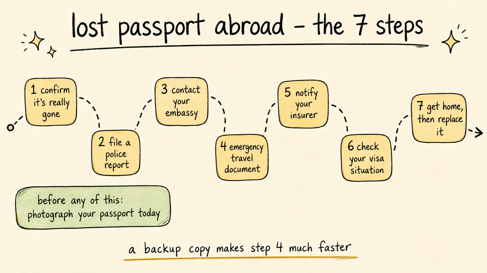

Lost Your Passport Abroad? Do These 7 Things Immediately
Travel Document Vault
Key Takeaways
- File a police report early - your insurer will usually want it, and some embassies ask for it too.
- Your embassy or consulate can generally help with an emergency travel document, though not every office offers every service. Call ahead - some require an appointment, and they can tell you how long yours takes.
- A copy of your passport details can help speed things up, though it can't be used as identification.
- Some travel insurance policies cover passport replacement costs. Check yours, and keep the police report, which insurers often ask for.
- The time to prepare is now, before anything goes wrong. A five-minute scan today could save days of stress abroad.

Contents
People replace lost passports abroad every day, and embassies treat it as routine work rather than an emergency. The process has an order to it, and following that order is what turns a bad afternoon into a delay rather than a cancelled trip. Here is what to do, step by step.
Before Anything Goes Wrong: Photograph Your Passport Now
If you are reading this before your trip, spend the next five minutes on this. Take a clear photo of the main data page of every passport you are travelling with. Store it in an encrypted app that works offline, which keeps it far more secure than your camera roll and fully private.
When you arrive at your embassy, they will typically ask for details from your passport, such as the number, date of issue, place of issue and expiry date. Without a copy, you are trying to recall these under stress. With one, you can hand them over quickly. A copy can help speed things up when you arrive with the details already written down, though it can't be used as identification.
A copy on your phone is a record rather than identification.
It's worth knowing in advance where a digital passport copy is accepted and where you still need the original.

Step 1: Confirm the Passport Is Actually Gone
Check everywhere before assuming the worst - jacket pockets, every bag compartment, hotel safe, the last taxi or restaurant. If it is genuinely gone or stolen, move through the remaining steps without delay.
Step 2: File a Police Report Immediately
Go to the nearest police station and report the passport lost or stolen. Your insurer will usually want it for a claim, and some embassies ask for it, though not all do: the Government of Canada, for example, says it isn't required for passport replacement. We'd do it within the hour if possible, while the details are still fresh in your mind.
Ask for a written copy with a case number, and request an English translation if one's available. Take a photo of it and keep multiple copies safe.
Step 3: Contact Your Embassy or Consulate
Your embassy or consulate is your route home, so contact them as soon as you have the police report. Official emergency contacts:
- UK citizens: GOV.UK emergency consular assistance
- US citizens: travel.state.gov - lost or stolen passports
- Australian citizens: Smartraveller - lost or stolen passport
- Canadian citizens: Canada.ca - lost or stolen passport abroad
Call before you visit. Some embassies require an appointment for emergency passport services (the UK says you may be asked to attend one), and they can tell you exactly what to bring. Turn up without one and it can cost you half a day.
Travel Document Vault keeps an offline copy of your passport details, which is the first thing an embassy asks you for. Download on the App Store and Google Play.


Step 4: Apply for an Emergency Travel Document
Your embassy issues an emergency travel document (ETD) or emergency passport, typically valid for a single journey home. Turnaround depends on the post and on how urgent your case is, so ask when you call.
What you will typically need (confirm with your embassy before visiting):
- Police report with case number, if your embassy asks for one
- Proof of identity - driving licence, birth certificate, or any other government-issued ID
- Passport photos - ask your embassy where to get these locally
- Your digital copy of the lost passport if you have one
- Proof of onward travel - flight booking, hotel confirmation
- Emergency document fee - ask your embassy how it can be paid
Step 5: Notify Your Travel Insurer
Report the loss to your travel insurer as soon as possible. Some policies cover passport replacement costs, and sometimes extra accommodation if you are delayed. Check yours. Keep every receipt for a claim, along with the police report number, which insurers often ask for.
You can make that call sooner if the policy number and the 24-hour hotline are already to hand rather than buried in an inbox you cannot reach. Our guide to which travel insurance documents to save before you go lists what to keep offline.
Step 6: Check Your Visa Situation
If a visa was stuck or printed into the lost passport, you will generally need your embassy and the issuing country's advice on getting a replacement; an emergency travel document does not carry it over. Your embassy will advise you whether your destination country will allow you to exit on an ETD, referencing the lost visa. Don't assume you can exit - confirm with your embassy before you attempt to leave.
What this means in practice
If you lose a passport in Thailand that contains a valid multi-entry visa for another country you planned to visit on the same trip, you would generally need to check with the issuing country about a replacement or a new visa. This takes time and money you may not have mid-trip. This is another reason a secure digital copy matters: it can help show the visa existed.
Step 7: Get Home and Replace Your Passport
Once you have your emergency travel document, confirm exit requirements with local immigration if needed, then rebook or confirm your journey home. Once you're back, apply for a full replacement passport through your official passport authority, and scan it, together with the rest of your travel documents, into an encrypted backup the same day it arrives.
Keep your own passport and visa dates on your phone, with reminders before they expire.
Before you rely on this: it's a blog, not an official source. Rules and details change, and your situation may be different. We check what we publish, and we can still be wrong or out of date. If something here matters to your plans, confirm it with the authority that handles it before you act.
Official sources
Frequently Asked Questions
What should I do if I lose my passport abroad?
File a police report immediately, then contact your nearest embassy or consulate to apply for an emergency travel document. Notify your travel insurer and keep every receipt. Having a secure digital copy of your passport before you travel can help speed things up, though it can't be used as identification.
Can I get an emergency passport abroad?
Yes. Many countries issue emergency travel documents through their embassies and consulates, typically valid for a single journey home. Turnaround varies by post and by how urgent your case is, so ask when you call. Contact your nearest embassy or consulate as soon as possible - some require an appointment.
Do I need a police report if my passport is stolen abroad?
Usually worth getting, though not every passport authority requires it. The Government of Canada says a police report isn't required for passport replacement but may help with insurance claims, and GOV.UK doesn't list one for a UK emergency travel document application. Some embassies do ask for one, and most travel insurers want it for a claim. Get it from the local police station immediately, ask for an English copy if possible, and keep multiple copies.
Will travel insurance cover a lost or stolen passport?
Some travel insurance policies cover passport replacement costs, and sometimes extra accommodation costs if you are delayed. Check your specific policy for what it covers. Keep the police report reference number, which insurers often ask for.
How can I speed up the emergency passport process?
Having a secure digital copy of your passport stored before you travel is a useful step. Your embassy will typically ask for details from your passport, such as the number, date of issue and place of issue. A digital copy means you can provide these quickly rather than trying to recall them under stress.